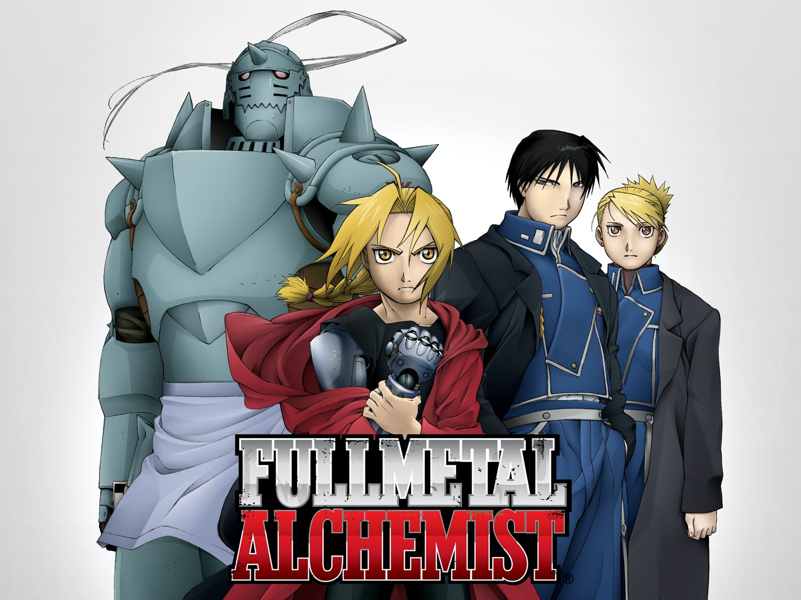

Fullmetal Alchemist takes place in the fictional country of Amestris. In this world, alchemy is one of the most-practiced sciences; alchemists who work for the government are known as State Alchemists and are automatically given the rank of major in the military. Alchemists have the ability, with the help of patterns called transmutation circles, to create almost anything they desire. However, when they do so, they must provide something of equal value in accordance with the Law of Equivalent Exchange. The only things alchemists are forbidden from transmuting are humans and gold. There has never been a successful human transmutation; those who attempt it lose a part of their body, and the result is an inhuman mass. Attemptees are confronted by Truth, a pantheistic and semi-cerebral God-like being who tauntingly regulates all alchemy use, and whose nigh-featureless appearance is relative to the person with whom Truth converses; it is frequently claimed and believed that Truth is a personal God who punishes the arrogant.
